chirping (v) - making a short, sharp high pitched sound (usually by small. birds or insects)
bustle (v) - move in an energetic manner
unison (n) - simultaneous utterance of words
rapping (v) - striking with a series of rapid audible blows
thumbed (v) - a book which has been read often and bearing the marks of frequent handling
cranky (adj.) - strange
Saar - a river in northeastern France and western Germany
Angelus (n) - a Roman Catholic devotion commemorating the Incarnation of Jesus and including the Hail Mary, said at morning, noon, and sunset.
“Vive la France!” - is an expression used in French to show patriotism. It›s difficult to translate the term literally into English, but it generally means “Long live France!”
A)Answer the following questions in two or three sentences:
1. Why did Franz dread to go to school that day?
2. What were the various
things that tempted Franz to spend his day outdoors?
3. Why was the narrator not able to get to his desk without being seen?
4. What was Frank sorry for?
5. Why were the old villagers sitting in the last desk?
6. What were the thoughts of the narrator's parents?
7. Why does M. Hamel say that we must guard our language?
8. M. Hamel was gazing at many things. What were they?
9. When and how did M. Hamel bid farewell to the class?
B. Answer the following questions in about 100-150 words:
1. We appreciate the value of something only when we are about to lose it. Explain this with reference to the French language and M.Hamel.
2. Give an account of the last day of M.Hamel in school.
In the given tabular column A the idiomatic expression has to be matched with a single word equivalent given in column B.
C. In column A are some of the idiomatic phrases from the essay. Match them with equivalent single words in column B:
A |
B |
go far |
reveal |
blow up |
submit |
show up |
explode |
call on |
succeed |
break off |
finish |
knuckle under |
require |
D. Frame sentences of your own using the above idiomatic phrases.
In this tabular column you have the find the meanings of the idiomatic expression with the help of a dictionary.
E. Given below are some idiomatic phrases. Find the meaning of it using the dictionary:
A |
B |
put on |
walk away |
come in |
time out |
try again |
Go on |
F. Listen to the article titled “Remembering Nel Jayaraman”
In pairs, present an interview. One student will be the interviewer and the other would be Nel Jayaraman himself. Two sets of conversations has been given as examples for your help.
* Listening text is on Page - 216
Student A : (interviewer) - Vanakkam sir. For what cause do you organise festivals ?
Student B: (NJ) - I organise these festivals with a difference. I present seeds to all the participating farmers.
Student A : (interviewer) - Oh ! That's really good, Sir. What do you expect in return?
Student B : (NJ) - In return I expect them to have double the harvest next year.
Student A : (interviewer) - Where did you organise the NEL festival ?
Student B : (NJ) - (dash)
Student A : (interviewer) - Can you mention how many people congregated for the meeting ?
Student B : (NJ) - (dash)
Student A : (interviewer) - What did you distribute to the farmers?
Student B : (NJ) - (dash)
Student A : (interviewer) - How did you commute to each these villages?
Student B : (NJ) - (dash)
Student A : (interviewer) - Ayya, Do you plan your schedules ?
Student B : (NJ) - (dash)
Student A : (interviewer) - How could you remain so cool an clam sir ?
Student B : (NJ) - I have an alternative (dash).
Student A : (interviewer) - Where was your heart and soul ?
Student B : (NJ) - (dash).
Student A : (interviewer) - People say when your popularity grew, you spent less time in the field ?
Student B : (NJ) - (dash).
Student A : (interviewer) - What is your message to the world ?
Student B : ( NJ) - (dash).
Student A : (interviewer) - Thank you, Sir. Nandri
Student B : (NJ) - Nandri.
Giving directions is sometimes not an easy job. Here is an example of how to give directions.
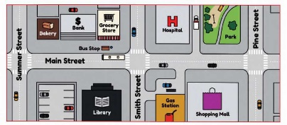
Instructions
You are waiting for your friend Raja at the shopping mall. He will get down from the bus at the bus stop in Main street. Give him directions to reach the mall.
After you get down, walk forward along the main street and cross smith street at the zebra crossing. You can see a hospital to your left. Walk straight and you can see the park to your left. Cross the road at the second zebra crossing to reach the shopping mall opposite the park. I will be waiting at the entrance.
G. A road map is given below. Answer the questions that follow with the help of the road map. Work in pairs and discuss to give directions to get to one place from another.
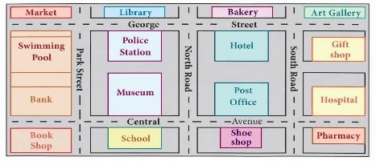
Market
Swimming Pool
Bank
Book Shop
Library
Police Station
Museum
Central
School
North Road
Bakery
Hotel
Post Office
Shoe Shop
South Road
Art Gallery
Gift shop
Hospital
Pharmacy
1. You are at the market. You need directions to go the pharmacy.
2. You are in a book shop. Ask your partner to direct you to the Art Gallery.
3. Give your partner the directions to go from the Bank to the hotel.
4. Direct your partner from the post office to the market.
5. Your partner wants to go the library from school. Give suitable directions.
Reading
H. Read the poem carefully and answer the questions that follow:
Festivals
Festival of harvest
Celebrations at its best
Festival of Light
To our heart's delight
Festival of Dance
Leaves us in a trance
Festival of Music
Where they sing the joyous lyric
Festival of flowers
That brightens up with colours
Festival of decorated cars
That twinkle like the stars
Festival of Love
That spreads treasures on a tree,
To share the word from above
That makes us happy and free.
Festival of sacrifice
To unfurl the joy of giving,
Celebrate them well and nice
To make life worth living.
Fill in the blanks.
(a) (dash) is the festival
which fills our hearts with delight.
(b) (dash) is referred to as a
festival of sacrifice.
2. What kind of joy is unfurled during the festival of sacrifice?
3. How can we make our life worth living?
4. What does the poet mean by 'Festival of flowers'?
5. When are we in a state of trance?
6. What do the people do when the festival of Music is celebrated?
7. What makes us happy and free, according to the poet?
8. Find out the rhyme scheme employed in the fourth stanza.
9. Pick out the rhyming words from the first stanza of the poem.
10. Write down the words that alliterate in the poetic lines below.
(a) Festival of Flowers
(b) That spreads treasures on a tree
Writing
Posters
What is a poster?
Posters are placards displayed in a public place announcing or advertising something. Posters are notices, advertisements and invitations - all in one.
What is the purpose of a Poster?
It is to create social awareness about current problems and needs, or to advertise or invite and display something.
Layout of a poster
❖ It should be attractive, colourful and tempting
❖ The title should be catchy
❖ Slogans or jingles should be used
❖ Sketches or simple drawings may be used
❖ Letters may be of different sizes and shapes
❖ Proper spacing should be given
Content of a poster
❖ The theme or subject
❖ Descriptions along with it
❖ Essentials like time, date, venue etc. to be given, in case of an event
❖ Names of issuing authority/ organisation to be given
Expression of Poster
❖ Slogans/ phrases can be used
❖ Sequencing to be correct
❖ Creativity to be appreciated
Example 1 : You are Vikram/ Vikasini. Design a poster in not more than 50 words for your school library to highlight the value of books and reading habits. You may use good slogans/ phrases.
Books
Inform
Initiate
Instruct
Inculcate
A book a day
improves
your language
everyday!
Our school library has 1000 books.
When you are tired and sad
your best friend is a book!
Read, read, and re-read it!
Reading books make a literate man!
The second poster is for a election campaign. The election is for the school pupil leader. It focuses to impress the students of the school to vote for the deserving candidate.
Example 2 : You are Ajay/ Aruna. You are contesting for the post of the School Pupil Leader of the Student Council of your school. Design a poster in not more than 50 words to impress your friends as to why they should vote for you. You may use good slogans/ phrases.
A for Arise! Awake A for Aruna! Ajay • Better security on campus • Good and improved canteen facilities • Playground with new equipment |
Note my work and then vote You can trust and believe in me ARUNA / AJAY Std XII for School Pupil Leader of STUDENTS'COUNCIL |
I. Create posters for following
1. You are Raja/ Ranjani. Draft a poster to create awareness about the harmful effects of using plastics, in not more than 50 words
2. Say 'No to Drugs' - Design a poster for it in not more than 50 words. You may use slogans/ phrases.
3. “Save our Earth” is the need of the hour. Draft a poster with attractive slogans/ phrases
for the same in not more than 50 words. Use attractive drawings.
4. You are Sita/ Sudhan. Design a poster in not more than 50 words to focus on not wasting water. Be creative.
5. Good handwriting is the index of an individual. Design a poster on the importance of good handwriting. Use catchy slogans or phrases. Your poster should not exceed 50 words.
Letter To Editor
This is a formal type of letter
The format is as follows:
❖ Sender's address
❖ Date
❖ Receiver's address
❖ Salutation
Sir / Madam
❖ Subject
❖ Subscriptions
Yours faithfully
Signature
Designation
Main body of the letter
Introductory paragraph - stating the problem
❖ 2nd paragraph - stating the causes of the problem (at least two)
❖ 3rd paragraph - stating the effects (at least two)
❖ 4th paragraph - suggestions or remedial measures (at least two)
❖ Concluding paragraph - the benefits and need for resolving the problem (each paragraph can be of just two or three sentences)
Some useful expressions
❖ Through the esteemed columns of your daily/ newspaper, I wish to bring to your kind notice (dash)
❖ In my opinion
❖This is a very shocking/ disturbing use of (dash)
Example:
You are Raja. You are upset about the bad influence of TV channels on the young children. You decide to write a letter to the editor of a leading newspaper suggesting measures to upgrade the standard. Write this formal letter in about 100-120 words
2, Sundar Court
Egmore
Chennai
27 November 20--
The Editor
The Hindu
ABC Road
Chennai - 600002
Sir
Sub.: Negative influence of TV channels
Through the esteemed columns of your newspaper, I wish to bring about a public awareness on the negative influence of TV channels on young children.
Children spend the evening watching channels that instigate only negative thoughts in their minds.
They are unwilling to go out and play in the fresh air. These depictions spoil their minds and negate their character.
Television is an effective social media and also a powerful tool for communication; it should telecast more and more value based programmes that would impress the children.
I humbly request you to publish this letter so that television channels improve their standard of telecast.
Thank you
Yours faithfully
Raja
Example 2:
You are Gomathi, a resident of a colony adjacent to the Thamirabarani River. Daily you see many people throwing waste into it, spoiling the pure water. Write a letter to a newspaper showing your concern about it and also voicing your worry. Give your suggestion to solve this problem.
1, Salai Street
Selvi Nagar
Thirunelveli
23.8.18
The Editor
The Thanthi
PQR Road
Thirunelveli
Sir
Sub.: Stop polluting the Thamirabarani River
Through your daily, I would like to bring to the notice of the authorities concerned the pollution of the Thamirabarani river.
It is sad to note that people residing in and around the river bed, throw all their waste or dump garbage into the river water. It has also been observed that they throw plastic bags too.
Though dustbins and containers have been provided there, the public do not make use of it.
Through this letter, let me appeal to the public that they need to keep the river clean and not pollute it. I appeal to the authorities to take the necessary action to prevent this from happening in the future.
Thank you Yours faithfully
Gomathi
J. Draft Letters for the following
1. You are Ajeet, living in a remote village in Tirunelveli. You participated in a health camp organised by your school. You were surprised to observe that most of the residents were unaware of health and hygiene. As a concerned citizen, write a letter to the editor stating the need to organise such camps focusing on the importance of health and hygiene.
2. You are Sanjay. Your colony utilises solar energy to light the common areas. You find many friends of your colony forgetting to switch off the lights in the common area. As a responsible citizen, write a letter to a newspaper, echoing the importance to conserve and preserve solar energy.
3.You are Sadasivam. You recently visited your native town in Vellore. You happened to accompany your grandmother to your family temple. You were shocked to notice the poor condition and maintenance of the temple. Write a letter to the Editor of local newspaper highlighting the poor condition of the temple. Also give some suggestions and request the HRC to take steps to improve the situation.
4. You are Sudha. Your neighbour has a pet dog that barks continuously. Write a letter to the Editor of a weekly newspaper of your locality, highlighting the nuisance and noise pollution created thus. Also suggest ways to solve the problem.
5. You are Raja. The street lights of your area do not work properly. As a responsible citizen, write a letter to the newspaper enlightening them about the problem and also suggest ways to brighten the area.
The subject and verb of a sentence should be in agreement with each other.
A verb agrees with the subject in number and person. A singular subject takes a singular verb and a plural subject takes a plural verb.
E.g. for singular verb in a sentence
1. She is a good speaker.
2. Ramu is an intelligent student.
3. Subhasini is an excellent dancer.
4. Sunita is a great artist.
5. He is a good person.
E.g. for plural verb in a sentence
1. Children are playing.
2. They have finished their work.
3. Geeta and Sita have won the prize.
4. You and I are friends.
5. Two and two make four.
Rules
1. Two or more singular subjects joined by “and” take a plural verb
E.g. You and I love music
2. When two subjects are joined by “as well as”, the verb agrees with the first subject
E.g. Her cousins as well as she are hard working
3. Either, neither, each, every and everyone are followed by a singular verb
E.g. Each of them is lovable
4. When two singular nouns refer to the same person or thing, the verb must be singular
E.g. My sister and friend has come
5. When two subjects express one idea, the verb is in the singular
E.g. Three and three make six
6. When a plural noun expresses some specific quantity or amount considered as a whole, the verb is in singular
E.g. Thirty litres of milk is too much for payasam
7. When two or more singular subjects are connected by “with”, “together with”, “and not”, “besides”, “no less than”, the verb is in singular
E.g. He and not she is to blame
8. The verb agrees with the number of the nouns that follow the verb
E.g. There are ten students in the crowd
9. Some nouns that are plural in form but singular in meaning, take a singular verb
E.g. News never comes too late
10. A plural noun which is in the name of a country, province, a book, is followed by a singular verb
E.g. Around the world in Eighty Days is an adventure novel
11. A collective noun takes a singular verb
E.g. The whole class is attentive.
12. A relative pronoun must agree with its gender, number and person
E.g. It is I, who is to write
A. Fill in the blanks appropriately
1. Mahatma Gandhi (dash) the father of our nation.
2. There ten dogs in my street.
3. They to write the exercises neatly.
4. Butter milk good for health.
5. Fruits good for health.
B. Fill in the blanks with the appropriate
verb:
1. The quality of dal (dash) not good.
2.The horse carriage (dash) at the door.
3. My friend and teacher (dash) come.
4. (dash) your father and mother at home?
5.Honour and glory (dash) his reward.
6.The ship with its crew (dash) sailing good.
7.Gullivers Travels (dash) an excellent story.
8. Neither food nor water (dash) found here.
9. Mathematics (dash) a branch of study.
10. Fifteen minutes (dash) allowed to read
the question paper.
In the given tabular column you have to change the singular names to plurals by either adding ‘s’ , ‘ies’, ‘ves’.
C. Change the singular nouns to plurals by either adding 's', 'ies', 'es', 'ves
1. 2. 3. 4. 5. 6. 7. 8. 9. 10. |
Singular leaf lorry bat clock table lamp doll biscuit knife loaf |
Plural leaves lorries bats clocks tables lamps dolls biscuits knives loaves |
Non Finites
Verbs are action words. They are divided into two: Finite and Non Finites.
Finite Verbs....
1. act as a verb.
2. act as a main verb of a sentence or a clause.
3. indicate number, person and tense.
4. are used in the present tense and the past tense.
5. have to agree with the subject and change accordingly.
On the other hand, Non Finite verbs
1. do not act as a verb.
2. act as nouns, adjectives and adverbs.
3. do not indicate number. person or tense.
4. are usually gerunds, infinitives or participle.
The different kinds of Non Finites are:
1. Infinitives
2. Gerund
3. Participles
Infinitives:
1. Full infinitives - It is “to+ a verb.
Example: Pushpa eats lunch with me.
{to+a verb}
'eats' is a third person singular, simple present tense, main verb.
2. Bare infinitives - It is a verb without 'to'
Example: Reena will help me.
Gerund:
Gerund functions as a noun, so it is called a verbal noun. It also functions as an adjective.
A gerund has the same form as a present participle.
Gerunds are used in the following ways.
1. As a subject and a kind of a noun.
a) Reading is a good habit.
b) Learning a language is always useful.
2. As an object:
Rita likes cooking.
3. As a complement:
Her liking is cooking.
4. Used in compound nouns:
bath tub {a tub to bathe}
Participles:
Participles come after an object to describe it and express the state the object is in. A present participle indicates an activity that is continuing and is in progress. A present or past participle can function as an adjective phrase to describe a noun placed before it.
Example- 1. The baby singing in the room is my child.
2. The bird flying in the sky is the lark.
The different forms of Participles are:
1. Present participle- verb + ing sleep+ing=sleeping
2. past participles - verb+d/ed/en like+d=liked
3. perfect participles - having + past participles having + finished = having finished
4. present - {passive} - being + past participle being + toed = being toed
5. perfect {passive} having been + past participle having been written
Participles are used as a verb Example Sita is sleeping.
It is used as an adjective Example She is a retired Principal.
D. Identify the non-finites in the following sentences and underline them
E.g., Children love eating chocolates
1. Roshan dreams of becoming an architect.
2. We must aim at fulfilling Dr APJ Abdul kalam's dream to make India the most developed country by 2020.
3. Taking the children to the museum is Seema's responsibility.
4. Having finished the work, the manager decided to return home.
5. Travelling with her family, Tara enjoyed every minute of it.
E. Fill in the blank with the correct alternative:
1. (dash) on the flute, Krishna returned it. {played/having played}
2.We wish she continues (dash) healthy. {being /be}
3. The doctor advised him against (dash) in the sun. {wander / wandering}
4. I like (dash) rasam. {drinking / drink}
5. (dash) the scissors I returned it to her. {using / having used}
G) In the given tabular column , tick the correct sentence.
G. Tick the correct sentences:
1. I had desired to eat a cake. |
|
|||||
2. My son is fond of music. |
||||||
3. Sreena avoids eating fruits. |
||||||
4. Bravery is not to pick a quarrel.
|
||||||
5. It is easier to say than do. |
James Falconer Kirkup
Read on the poem to know why we mustn't hate our brethren because they belong to a different country or speak a different language. The poet reminds us of that how all people are similar and part of the brotherhood of men. By the end of the poem we get to know how it is unnatural to fight against ourselves
.
Remember, no men are strange, no countries foreign
Beneath all uniforms, a single body breathes
Like ours: the land our brothers walk upon
Is earth like this, in which we all shall lie.
They, too, aware of sun and air and water,
Are fed by peaceful harvests, by war's long winter starv'd.
Their hands are ours, and in their lines we read
A labour not different from our own.
Remember they have eyes like ours that wake
Or sleep, and strength that can be won
By love. In every land is common life
That all can recognise and understand.
Let us remember, whenever we are told
To hate our brothers, it is ourselves
That we shall dispossess, betray, condemn.
Remember, we who take arms against each other
It is the human earth that we defile.
Our hells of fire and dust outrage the innocence
Of air that is everywhere our own,
Remember, no men are foreign, and no countries strange.
About the poet
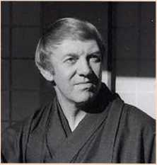
James Falconer Kirkup (1918-2009)born James Harold Kirkup, was an English poet, translator and travel writer. He wrote over 30 books, including autobiographies, novels and plays. Kirkup wrote his first book of poetry, The Drowned Sailor at the Downs, which was published in 1947. His home town of South Shields now holds a growing collection of his works in the Central Library, and artefacts from his time in Japan are housed in the nearby Museum. His last volume of poetry was published during the summer of 2008 by Red Squirrel Press, and was launched at a special event at Central Library in South Shields.
Condemn - express complete disapproval
Labour - hardwork
Betray - disloyal
Defile - damage the purity or appearance
Outrage - extremely strong reaction of anger, shock
Based on the understanding of the poem, read the following lines and answer the questions given below.
1. Beneath all uniforms, a single body breathes
Like ours: the land our brothers walk upon
Is earth like this, in which we all shall lie.
a) What is found beneath all uniforms?
b) What is same for every one of us?
c) Where are we all going to lie finally?
2. They, too, aware of sun and air and water,
Are fed by peaceful harvests, by war's long winter starv'd.
a) What is common for all of us?
b) How are we fed?
c) Mention the season referred here?
3. Their hands are ours, and in their lines we read
A labour not different from our own.
a) Who does 'their' refer to?
b) What does the poet mean by 'lines we read'?
c) What does not differ?
4. Let us remember, whenever we are told
To hate our brothers, it is ourselves
That we shall dispossess, betray, condemn.
a) Who tells us to hate our brothers?
b) What happens when we hate our brothers?
c) What do we do to ourselves?
5. Our hells of fire and dust outrage the innocence
Of air that is everywhere our own,
Remember, no men are foreign, and no countries strange.
a) What outrages the innocence?
b) Who are not foreign?
c) What is not strange?
Literary devices:
Transferred Epithet
A transferred epithet is a figure of speech where an adjective or epithet describing a noun is transferred from the noun it is meant to describe to another noun in the sentence. In the lines, They, too, aware of sun and air and water,
Are fed by peaceful harvests, by war's long winter starv'd. “starv'd” is an epithet which is placed beside the noun 'winter'. However, it does not describe the 'winter' as being starved, but describes the pronoun 'they'. Historically many wars were fought during the winter, while the harvest season was essentially peaceful. 'They' refers to the soldiers in uniform who had to starve during winter while fighting for their land.
e.g., Winter starv'd - transferred epithet
Metaphor
A figure of speech in which a word or phrase is applied to an object or action to which it is not literally applicable. Recorded from the late 15th century, the word comes via French and Latin from Greek metaphora, from metapherein 'to transfer'.
e.g., Hells of fire - metaphor
Repetition
Poets often repeat single words or phrases, lines, and sometimes, even whole stanzas at intervals to create a musical effect; to emphasize a point; to draw the readers' attention or to lend unity to a piece. In “No Men are Foreign” James Kirkup repeats the word 'Remember' five times in the poem to emphasize the serious message the poem has to convey. Similarly, the last line of the last stanza (“Remember, no men are foreign, and no countries strange”) though reversed, is the same as the first line of the first stanza (“Remember, no men are strange, no countries foreign”). This repetition emphasizes the core message of the oneness of mankind.
Based on your understanding of the poem complete the following by choosing the appropriate words/phrases given in brackets:
This poem is about the (dash) of all men. The subject of the poem is the (dash) race, despite of the difference in colour, caste, creed, religion, country etc. All human beings are same. We walk on the (dash) and we will be buried under it. Each and everyone of us are related to the other. We all are born same and die in the same way. We may wear different uniforms like' ,' (dash) during wars
the opposing side will also have the same (dash) like ours. We as human do they same labour with (dash) and look at the world with the (dash) Waging war against others as they belong to a different country is like attacking our own selves. It is the (dash) we impair. We all share the same (dash) We are similar to each other. So the poet concludes that we shouldn't have wars as it is (dash) to fight against us. (unity of human, dreams and aspirations, same land, our hands, unnatural, breathing body, same eyes, brotherhood, language, human earth)
Based on your understanding of the poem answer the following questions in a paragraph of about 100-150 words.
1. What is the central theme of the poem 'No men are foreign?
2. The poem 'No men are foreign has a greater relevance in todays world. Elucidate.
This is a true story of a little boy with a brave heart and passionate love for his village. Read on the story to find what the little hero of Holland did to save his fellowmen.
Holland is a country where much of the land lies below sea level. Only great walls called dikes keep the North Sea from rushing in and flooding the land. For centuries the people of Holland have worked to keep the walls strong so that their country will be safe and dry. Even the little children know the dikes must be watched every moment, and that a hole no longer than your finger can be a very dangerous thing.
Many years ago there lived in Holland a boy named Peter. Peter's father was one of the men who tended the gates in the dikes, called sluices. He opened and closed the sluices so that ships could pass out of Holland's canals into the great sea. One afternoon in the early fall, when Peter was eight years old, his mother called him from his play. “Come, Peter,” she said. “I want you to go across the dike and take these cakes to your friend, the blind man. If you go quickly, and do not stop to play, you will be home again before dark.”
The little boy was glad to go on such an errand, and started off with a light heart. He stayed with the poor blind man a little while to tell him about his walk along the dike and about the sun and the flowers and the ships far out at sea. Then he remembered his mother's wish that he should return before dark and, bidding his friend goodbye, he set out for home.
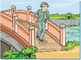
As he walked beside the canal, he noticed how the rains had swollen the waters, and how they beat against the side of the dike, and he thought of his father's gates.
“I am glad they are so strong,” he said to himself. “If they gave way what would become of us? These pretty fields would be covered with water. Father always calls them the 'angry waters.' I suppose he thinks they are angry at him for keeping them out so long.”
As he walked along he sometimes stopped to pick the pretty blue flowers that grew beside the road, or to listen to the rabbits'soft tread as they rustled through the grass. But oftener he smiled as he thought of his visit to the poor blind man who had so few pleasures and was always so glad to see him.
Suddenly he noticed that the sun was setting, and that it was growing dark. “Mother will be watching for me,” he thought, and he began to run toward home.
Just then he heard a noise. It was the sound of trickling water! He stopped and looked down. There was a small hole in the dike, through which a tiny stream was flowing,
Any child in Holland is frightened at the thought of a leak in the dike.
Peter understood the danger at once. If the water ran through a little hole it would soon make a larger one, and the whole country would be flooded. In a moment he saw what he must do. Throwing away his flowers, he climbed down the side of the dike and thrust his finger into the tiny hole.
The flowing of the water was stopped!
“Oho!” he said to himself. “The angry waters must stay back now. I can keep them back with my finger. Holland shall not be drowned while I am here.”
This was all very well at first, but soon it grew dark and cold. The little fellow shouted and screamed. “Come here; come here,” he called. But no one heard him; no one came to help him.
It grew still colder, and his arm ached, and began to grow stiff and numb.
He shouted again. “Will no one come? Mother! Mother!”
But his mother had looked anxiously along the dike road many times since sunset for her little boy, and now she had closed and locked the cottage door, thinking that Peter was spending the night with his blind friend, and that she would scold him in the morning for staying away from home without permission. Peter tried to whistle, but his teeth chattered with the cold. He thought of his brother and sister in their warm beds, and of his dear father and mother. “I must not let them be drowned,” he thought. “I must stay here until someone comes, if I have to stay all night.”
The moon and stars looked down on the child crouching on a stone on the side of the dike. His head was bent, and his eyes were closed, but he was not asleep, for every now and then he rubbed the hand that was holding back the angry sea.
“I'll stand it somehow,” he thought. So he stayed there all night keeping the sea out.
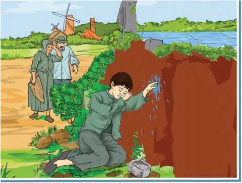
Early the next morning a man going to work thought he heard a groan as he walked along the top of the dike. Looking over the edge, he saw a child clinging to the side of the great wall.
“What's the matter?” he called. “Are you hurt?”
“I'm keeping the water back!” Peter yelled. “Tell them to come quickly!”
The alarm was spread. People came running with shovels and the hole was soon mended.
They carried Peter home to his parents, and before long the whole town knew how he had saved their lives that night. To this day, they have never forgotten the brave little hero of Holland.
About the author
Mary Mapes Dodge (1831-1905) was an American children's author and editor, best known for her novel Hans Brinker. She was the recognized leader in juvenile literature for almost a third of the nineteenth century. Dodge conducted St. Nicholas for more than thirty years, and it became one of the most successful magazines for children. She was able to persuade many of the great writers of the world to contribute to her children's magazine - Mark Twain, Louisa May Alcott, Robert Louis Stevenson, Tennyson etc.
dikes (n) - an embankment for controlling or holding back the waters of the sea or a river.
sluices (n) - a sliding gate or other device for controlling the flow of water, especially one in a lock gate.
trickling (v) - flowing in a small stream (a liquid)
numb (adj.) - deprived of the power of sensation.
chattered (v) - feeling cold and frightened that one can't stop the upper teeth from against ones lower teeth.
crouching (v) - adopting a position where the knees are bent and the upper body is brought forward and down.
groan (v) - make a deep inarticulate sound conveying pain
shovels (n) - tool resembling a spade with a broad blade and typically upturned side, used for moving earth, coal, snow etc.
A graphic organiser is given with various headings like Title, Setting, Character, Theme, Plot, Climax, and the values highlighted in the story. You have to fill in the space provided.
A. Based on the understanding of the story, complete the Graphic Organiser suitably.
Title:
Setting:
Characters:
Theme:
Plot:
Climax:
Values highlighted in the story:
B)Based on the understanding of the story answer the following questions in one or two sentences:
1. What are the little children of Holland, aware of?
2. What was the work assigned to Peter's father?
3. Why did Peter's mother call him?
4. How did Peter spend his time with his blind friend?
5. Why did the father always say 'angry waters'?
6. What did Peter see when he stopped near the dikes?
7. What were the thoughts of the mother when Peter didn't return home?
8. How did Peter spend his night at the dikes?
9. Who found Peter in the dikes and what did he do?
10. How did the villagers mend the hole?
C. Based on your understanding of the story answer the following question in about 100-150 words.
1. Narrate in your own words the circumstances that led Peter to be a brave little hero.
D. Identify the character/speaker:
1. “I want you to go across the dike and take these cakes to your friend, the blind man.”
2. “I am glad they are so strong”.
3. “Holland shall not be drowned while I am here.”
4. “What's the matter?” he called. “Are you hurt?”
5. “Tell them to come quickly!”
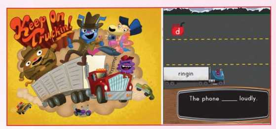
In this ICT corner you learn about subject, verb agreement for appropriate usage. Step by step explanation is given with images. A QR code is also given.
❖ To learn the subject verb agreement
❖ To use appropriate verbs
Steps
1. Type the URL link given below in the browser or scan the QR code.
2. Enable flash to play the game
3. Click the correct letters to join with the verb by pushing green and red buttons at right side corner.
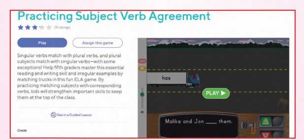
Download Link
Click the following link or scan the QR code to access the website.
https://www.education.eom/game/sv-agreement-game/game-section
** Images are indicatives only.
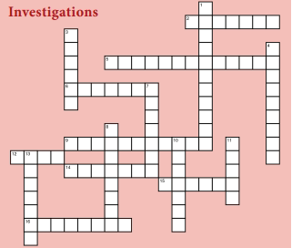
Solve the crossword using the list of words and the clues.
infer
observe
examine
revealed
inconceivable
aspects
link
detective
inquisitive
inspect
conclude
inquiry
analyze
mental
deduce
investigate
Across
2. a question
5. unimaginable
6. to examine all the parts of something in order to understand it
9. to look into a situation (often a crime, but it can also be a mystery
12. a connection; one part of a chain
14. to notice or watch
15. to figure out something unknown by considering all its known aspects and reasoning it through
16. to consider the evidence and then decide what is true or correct (OR to end something)
Down
1. curious; wants to understand things
3. related to the mind
4. a person whose job is to find or recognize the hidden information needed to solve a crime
7. to look closely at something
8. shown or made known
10. different sides or ways of looking at something
11. to make a logical guess that something is true based on the evidence, although the evidence is not clear enough to be absolutely certain
13. to look at something carefully to find problems or specific information
Arthur Conan Doyle
The detective Sherlock Holmes was seriously ill. He wanted to meet his assistant Watson. He asks his landlady to get him. Watson was surprised to see the condition of his master. Was Watson able to save his master? Read on to know more about the underlying story behind Holmes' sickness.
Mrs. Hudson, the landlady of Sherlock Holmes, came to me and said, “Mr. Holmes is dying, Mr. Watson. For three days he has been sinking, and I doubt if he will last another day He would not let me get a doctor. I told him I could not stand it anymore and would get a doctor.” He replied, “Let it be Watson then.”
I was horrified for I had not heard about his illness before. I rushed for my hat and coat. As we drove back, I asked her about the details.
“There is little I can tell you, sir. He has been working on a case down at Rotherhithe, near the river, and has brought this illness back with him. He took to bed on Wednesday afternoon and has never moved since. For three days neither food nor drink has passed his lips.” “Why did you not call a doctor?” I asked.
“He wouldn't have it, sir. I didn't dare to disobey him.”
a. How did Watson feel when he heard of Holmes illness?
b. Why didn't the landlady call the doctor?
He was indeed a sad sight. In the dim light of a foggy November day, the sick-room was a gloomy spot, but it was the gaunt face staring form the bed that brought chill to my heart. His eyes had the brightness of fever, his cheeks were flushed, and his hand twitched all the time. He lay listless.
“My dear fellow!” I cried approaching him. “Stand back! Stand right back!” he cried.
“But why? I want to help you,” I said. “Certainly, Watson, but it is for your own sake.”
“For my sake?” I was surprised.
“I know what is the matter with me. It is the disease from Sumatra. It is deadly and contagious, Watson - that's it, by touch.”
“Good heavens, Holmes! Do you think this can stop me?” I said advancing towards him.
“If you will stand there, I will talk. If you don't you must leave the room,” said my master.
I have always given in to Holmes' wishes. But now my feelings as a doctor were aroused. I was at least his master in the sick-room.
“Holmes,” I said, “you are not yourself whether you like it or not. I will examine your symptoms and treat you.”
“If I am to have a doctor,” said he, “let me at least have someone in whom I have confidence.”
“Then you have none in me?”
“In your friendship, certainly. But facts are facts, Watson. You are a general practitioner, not a specialist of this disease.”
“If so, let me bring Sir Japer Meek or Penrose Fisher, or any other best man in London.”
“How ignorant you are! Watson!” he said with a groan.
“What do you know about Tarpaunli fever or the black Formosa plague?”
“I have never heard of them,” I admitted.
c. What was the condition of Holmes when Watson saw him?
d. According to Holmes what was the disease he was suffering from?
“There are many problems of the disease in the East. I have learnt that much during my recent researches. And during this course I caught this illness,” he said.
“I will bring Dr. Ainstree then,” I said going towards the door. Never have I had such a shock when the dying man bolted the door and locked it, shouted in an uncontrolled way and in a moment he was back in his bed.
“You won't have the key by force from me Watson. Be here till 6 o'clock. It is four now”
“This is madness, Holmes,” I said.
“Only two hours, Watson. Then you can get a doctor of my choice. You can read some books, over there. At six we will talk again.”
Unable to settle down to reading, I walked slowly round and round, looking at the pictures. Finally I came to the mantel piece, where among other things I saw a small black and white ivory box with sliding lid. As I held it in my hand to examine it, I heard a dreadful cry. “Put it down! Down at once, Watson,” he said, “I hate to have my things touched. Sit down man, and let me have my rest!”
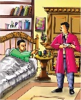
Then I sat in silent dejection until the stipulated time had passed.
“Now Watson,” he said, “Have you any change?”
“Yes,” I replied.
“How many half- crowns? Put them in your watch - pocket. And all the rest in your trouser pocket. You will light the gas lamp, but it must be half on. You will have the kindness to place some letters and paper on the table within my reach. Now place the ivory box on the table within my reach. Slide the lid a bit with tongs. Put the tongs on the table. Good! Now you can go and fetch Mr. Culverton Smith, of 13 Lower Burke Street”.
I was hesitant to leave him now. He was delirious.
“I have never heard of the name,” I said.
“Well, he is the man who has the knowledge of this disease but he is not a medical man. He is a planter. He lives in Sumatra, now visiting London. I didn't want you to go before six, because you wouldn't have found him in his study. I hope you will be able to persuade him to come. You will tell him exactly how you have left me.” He said, “You must tell him that I'm dying - plead with him, Watson.”
“I'll bring him in a cab,” I said.
“No. You will persuade him to come and return before him. Make any excuse. Remember this, Watson.”
I saw Mrs. Hudson was waiting outside, trembling and crying. Below, as I waited for the cab, I met Inspector Morton of the Scotland Yard. He was not in his uniform.
“How is he?” asked Inspector Morton.
“He is very ill,” I answered.
I reached Mr. Culverton Smith's house. The butler appeared at the doorway. Through the half-open door I heard a man's voice telling the butler, “I am not at home, say so.” I pushed past the butler and entered the room. I saw a frail man with bald head sitting. “I am sorry,” I said, “but the matter cannot be delayed. Mr. Sherlock Holmes .”
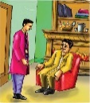
The mere mention of his name had a different effect on the man.
“Have you come from Holmes? How is he?” he asked.
“He is very ill. That is why I have come. Mr. Holmes has a high opinion of you and thought you are the only man in London who can help him.”
The little man was startled.
“Why?” he asked.
“Because of your knowledge of the Eastern diseases,” I replied.
“How did he get it?” he asked.
I told him everything. He smiled and agreed to come. Pretending that I had some other appointment. I left him. With a sinking heart I reached Holmes' room. I told him that Mr. Smith was coming.
“Well done! Watson!” he said. “You have done everything that a good friend could do. Now you disappear to the next room. And don't speak, or come here.”
e. Who did Watson see when he entered the room?
f. What were the instructions given by Holmes to Watson?
I heard the footsteps. I heard a voice say, “Holmes! Holmes! Can you hear me?”
“Is that you Mr. Smith?” Holmes whispered. “You know what is wrong with me. You are the only one in London who can cure me.”
“Do you know the symptoms?” asked Smith.
“Only too well, Mr. Smith,” and he described the symptoms.
“They are the same, Holmes,” Smith said, “Poor Victor was a dead man on the fourth day -a strong and healthy young man. What a coincidence indeed!”
“I know that you did it,” said Holmes.
“Well, you can't prove it.”
“Give me water, please,” Holmes groaned.
“Here.” I heard Smith's voice.
“Cure me, please. Well, about Victor Savage's death. You did it. I'll forget everything, but cure me. I'll forget about it.”
“You can forget or remember, just as you like. It doesn't matter to me how my nephew died. Watson said you got it from the Chinese sailors. Could there be any other reason?”
“I can't think. My mind is gone, help me,” pleaded Holmes.
“Did anything come by post? A box by chance? On Wednesday?”
“Yes I opened it and there was a sharp spring inside it. A joke perhaps. It drew blood,” said Holmes.
“No, it was not a joke, you fool, you've got it. Who asked you to cross my path? You knew too much about Victor's death. Your end is near, Holmes. I'll carry this box in my pocket. The last piece of evidence!”
“Turn up the gas, Smith,” said Holmes in his natural voice.
“Yes I will, so that I can see you better.” There was silence. Then I heard Smith say, “What's all this?”
“Successful acting,” said Holmes, “for three days I didn't taste anything - neither food nor drink.”
g. Why did Holmes plead with Smith?
h. Who was responsible for Victor Savage's death? What was the evidence for it?
There were footsteps outside. The door opened and I heard Inspector Morton's voice. “I arrest you on charge of murder,” he said.
DO YOU KNOW?
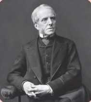
Joseph Bell (1837-1911). He was a lecturer in medicine whose detective approach to diagnosis inspired Arthur Conan Doyle's character Sherlock Holmes. The wider picture in Scotland at the time is set out in our Historical Timeline. Joseph Bell was born in Edinburgh.
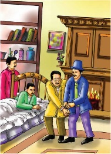
“If so, let me bring Sir Jaspet Meek or Penrose fisher, or Holmes”.
There was a sudden rush and scuffle, followed by the clash of iron and sudden cry of pain. There was a click of handcuffs. Holmes asked me to come in.
“Sorry, Watson, I was rude to you. I undermined your capability as a doctor. It was just to get Smith here. And I didn't want you to know that I was not ill.”
“Oh! That was only to prove that I was delirious,” he laughed. “I need to eat now, Watson. Mr. Smith killed his nephew and he wanted to kill me the same way to avoid imprisonment. I need to eat now, Watson. I think that something nutritious at Simpsons' would not be out of place. And thank you, Watson,” he said.
i. What explanation did Holmes give for speaking rudely to Watson?
j. How was Holmes able to look sick?
About the Author
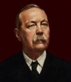
Sir Arthur Ignatius Conan Doyle (1859-1930) was a British writer best known for his detective fiction featuring the character of Sherlock Holmes, which are generally considered milestones in the field of crime fiction. Doyle wrote forty-six short stories featuring the famous detective. The story is narrated by the character, Dr.Watson. Originally a physician, in 1887 he published A Study in Scarlet, the first of four novels about Holmes and Dr. Watson. In addition, Doyle wrote over fifty short stories featuring the famous detective. The Sherlock Holmes stories are generally considered milestones in the field of fiction. His notable works include Stories of Sherlock Holmes and The Lost World.
gaunt (adj.) - lean, especially because of suffering, hunger or age.
twitched (v) - give short, sudden jerking movements.
contagious (adj.) - spreading of a disease from one person to another by direct contact
groan (v) - make a deep inarticulate sound conveying pain or despair.
plague (n) - a contagious bacterial disease characterized by fever.
bolted (v) - closed the door with a bar that slides into a socket.
mantle piece (n) - a structure of wood or marble above or around the fireplace.
half-crown (n) - a former British coin equal to two shillings and sixpence (12 l/2p).
tongs (n) - a device used for picking up objects consisting of two long pieces free at one end and pressed together at the other end.
delirious (adj.) - disturbed state of mind characterized by restlessness.
frail (adj.) - weak and delicate.
startled (v) - felt sudden shock or alarm.
scuffle (v) - to have a sudden short fight
A)Answer the following questions in one or two sentences.
1. Who was Mrs. Hudson? Why was she worried?
2. Why didn't Holmes let Watson examine him?
3. Why did Holmes warn Watson against touching his things? What was Watson's reaction?
4. What did Watson find on the table near the mantlepiece?
5. Who is Mr. Culverton Smith?
6. What did Holmes ask Watson to do before leaving his room?
7. What instructions did Holmes give Watson to get Mr. Smith?
8. Why did Holmes want Smith to treat him?
9. According to Smith how did Holmes get the disease?
10. Who arrested Smith? What were the charges against him?
B. Answer the following questions in a paragraph of about 100-150 words.
1. How did Holmes trap Mr. Culverton Smith to confess the murder?
2. How did Watson help his friend to arrest the criminal?
Vocabulary
Homophones are words that sound the same but have different meanings and spellings. The text has many homophones such as : see-sea, hear-here, knew-new.
C. Complete the following sentences by choosing the correct options given.
1. Niteesh bought a (dash) (knew/ new) cricket bat.
2. The shepherd (dash) (herd/heard) the cry of his sheep.
3. Lakshmi completed her baking (dash) (course/coarse) successfully.
4. Priya has broken her (dash) (four/fore) limbs.
5. Leaders of the world must work towards the (dash) (peace/piece) of human race.
Use the given examples and make sentences of your own.
Commonly confused words
English has a lot of commonly confused words. They either look alike or look and sound alike, but have completely different meanings and usage. Here are some examples from the text.
brought (v) - past participle of bring.
E.g. Anitha had brought a book from the library.
bought (v) - past participle of buy. E.g. Lalitha had bought a new dress last week.
affect (v) - to have an effect on. E.g. The pet's death affected his master.
effect (n) - anything brought about by a cause or agent; result. E.g. Both El Nino and La Nina are opposite effects of the same phenomenon.
D. Complete the tabular column by finding the meaning of both the words given in the boxes. Use them in sentences of your own.
Santa filled his pocket with candies.
|
Maheswari carried a packet of ribbons. |
Puppies are fond of soft balls. Rosalin found a 100 rupee note on her way back home. |
D. This tabular column Some homophones are given. You have to frame sentences of your own using them.
pocket(n)-a small bag sewn into or on clothing to keep carry small things |
packet (n)-a paper or cardboard container,typically one in which goods are sold
|
fond(adj.)-having an affection or liking for found(v)-having been discovered by chance or unexpectedly |
lost (v) last (adj.) |
paused (v) passed (v) |
pitcher (n) picture (n) |
Listening
E. Listen to the story and answer the questions given below
1. Where does this story take place?
a. in a bakery
b. at the police station
c. in Ms. Gervis' house
d. in Ms. Gervis' apartment
2. Near the beginning of the story, “Ms. Gervis' eyes are full of tears. Her hands are shaking.” How does Ms. Gervis probably feel?
a. She is upset.
b. She is tired.
c. She is hungry.
d. She is confused.
3. What makes the detective sure that the robber did not come through the windows?
a. The windows are locked.
b. The windows face the police station.
c. The windows have not been used in months.
d. The windows are too small for a person to fit through.
4. What else was stolen from the apartment?
a. crystal
b. jewelery
c. money
d. nothing
5. “And the robber definitely did not use the front door.” Which is the best way to rewrite this sentence?
a. “And the robber may not have used the front door.”
b. “And the robber probably did not use the front door.”
c. “And the robber was not able to use the front door.”
d. “And the robber certainly did not use the front door.”
6. What does Ms. Gervis do with her cakes?
a. She eats them.
b. She sells them.
c. She hides them.
d. She gives them away.
7. What does the detective seem to think will happen if he solves the mystery?
a. Ms. Gervis will start baking cakes again
b. Ms. Gervis will bake him extra cakes
c. Ms. Gervis will give him her secret recipe
d. Ms. Gervis will give him money and jewels
8. Do you like mysteries? What is your favorite kind of story? Explain.
(dash)
(dash)
(dash)
Listening text is on page-217
Speaking
REVIEW
A review is a critical assessment of a book, play, film, an event, etc. published in a newspaper or magazine.
Review process: (present it in info graphics)
❖ First, choose the piece/work (a book, movie, an article or event).
❖ Read the selected piece (a book/an article) or watch it (a movie/an event) cautiously until you understand it thoroughly.
❖ Focus on the main idea of the piece and its purpose.
❖ Critically evaluate the work.
❖ Make a note of all that is worthy of analysis.
❖ Summarise it in a brief way.
❖ Present it orally or in written form.
F. Exercise
1. Present the review of a movie that you have watched recently.
2. Give the review of a book that has interested you a lot.
3. Review an event which your school has hosted recently.
Read the story carefully and answer the questions asked below
A Mystery Case
For a man of ease, John Mathew kept an arduous schedule. On Wednesdays, for example, he was awakened at 9.00 and served breakfast in bed by Emanuel, his chef. Next came a quick fitness session with Basky, his personal trainer. Then, at 10.30, John Mathew answered his mail, returned phone calls and rearranged his social calendar helped by Louise, his secretary. At noon, John Mathew drove his Jaguar to the station and took a commuter train into Guindy for his weekly lunch with Lalli and Lolly, his two oldest and dearest friends. Then, on to a little shopping. The 4:05 nonstop would bring him back to Tambaram. As John Mathew drove up to the house at 5:00, Basky would have already set up the massage table and warmed the scented oils for a soothing herbal wrap. It was a gruelling life but John seemed to thrive on it. On this Wednesday, however, there was an unexpected change of plans. Today John's shopping errand involved taking his diamond bracelet into the jeweler’s for cleaning. He threw the expensive jewel into his purse and proceeded on to lunch. As John waved his friends good-bye and exited the restaurant, he sensed he was being followed. The feeling continued until he reached Tenth Avenue. Then, as he joined the throng of shoppers, John felt a hug. Within a split-second, a man riding pillion on a bike rode past him, grabbing his purse. He couldn't guess who the culprit was?
G. Match the following.
1. A man of ease -Emanuel
2. John's trainer - Lalli and Lolly
3. Mathew's secretary - John Mathew
4. John's chef - Louise
5. Mathew's friends - Basky
H. State whether the given statements are true or false. If false correct the statements.
1. Mathew is a very busy man.(dash)
2. He woke up very late in the morning.(dash)
3. He always had lunch with his family.(dash)
4. He exercised with Louise every day.(dash)
5. He preferred handling mail by himself.(dash)
Pamphlet
❖ A Pamphlet is a small booklet or leaflet containing information or arguments about a single subject.
❖ They are helpful in presenting information in a more attractive way and also easily accessible and economical to distribute.
❖They are generally used for describing the product or instructions, commercial information, promotion of events or promoting tourism.
HOW TO CREATE A PAMPHLET
Step 1: Finalise your text
Step 2: Choose a layout
Step 3: Add appropriate images
Step 4: Ensure your pamphlet is cohesive and appealing
I.Create a pamphlet for the following:
1. Make a pamphlet on 'Dengue Awareness' (Focus on its causes, preventions, symptoms and precautions).
2. Make an attractive pamphlet for your school's Fair organised for raising funds for (any) relief (Specify the date, time, types of stalls and the reasons for the fair).
3. Make a pamphlet on the latest gadgets (Mention the variety of models, uses, need and availability).
Letter of Enquiry
A letter of enquiry is a formal letter, written to get more details / information about something. In this letter the word limit should not exceed 200 words. It is used to enquire and get details to purchase an item, to know about a course for study, a place for a trip, etc It must include sender's details.
A model enquiry letter is given with from and to address. The enquiry is about a damage replacement of a Lenovo laptop.
Model of Enquiry Letter
Vimala had purchased a laptop last year. She writes the following letter to the shop enquiring about the warranty coverage for the damage caused.
Mrs. Vimala
342, Annai Theresa street
Chennai-16.
vimala1958@gmail.com
4th August 2019
The Manager
Digital Electronics
Chennai-4
Subject: Enquiry about damage replacement-regarding.
Madam / Sir,
Last year, I purchased a new Lenovo laptop in your shop during the New year offer.
Now, the laptop's display is damaged. So I need to know whether there is any free replacement coverage or warranty period that covers the cost of repair. Please, let me know the best way to address this issue.
Thank you,
Yours faithfully,
Vimala. M
Write a letter of enquiry for the following
1. Your a librarian in a newly established school. Write a letter to the book dealer inquiring about the list of newly arrived English children's story books and various subject books relevant to 10-14 age groups.
2. Venkat hails from a remote village of Kancheepuram District, Tamil Nadu who aspires to become an IAS officer. Currently, he is in class X. He notices an advertisement on free classes for the IAS aspirants by a trust in a news paper. He writes a letter to the coordinator of the trust inquiring for further details.
3. Write a letter to the head of the BSNL office enquiring regarding the internet broadband scheme launched recently.
Some points to be recalled , regarding gerunds, phrases, clause, finite verbs and non-finite verbs are given.
One line explanation is given for Simple, Compound and Complex sentence is given.
Let us recall some important points that we learnt in the previous unit.
❖ Gerunds, Infinitives and Participles are Non Finite Verbs.
❖ Phrase is a group of words which does not contain a Finite Verb.
❖ Clause is a group of words which has a Finite Verb.
❖ Finite Verbs indicate the tense and time of actions.
❖ Non Finite Verbs do not indicate tense and time of actions.
Now, let us study about the three different kinds of sentences.
1. Simple 2. Complex 3. Compound
❖ A Simple sentence consists of only one Finite Verb.
❖ A Complex sentence has one Main Clause and one or more Subordinate Clauses.
❖ A Compound sentence has two Main Clauses combined by a Coordinating Conjunction.
SIMPLE SENTENCE
Examples
1. Ramu is too poor to buy a bicycle.
2. Despite his old age, Raghav walked fast.
3. In the event of not consulting a doctor, you cannot recover.
4. On seeing the teacher, the children stood up.
5. Due to a heavy downpour, the match was cancelled.
(In the above sentences, finite verbs are highlighted)
COMPLEX SENTENCE
Examples
1. Ramu is so poor that he cannot buy a bicycle.
2. Though Raghav was old, he walked fast
3. Unless you consult a doctor, you cannot recover.
4. As soon as the children saw the teacher, they stood up
5. As there was a heavy downpour, the match was cancelled.
(The parts of the sentences highlighted are main clauses)
COMPOUND SENTENCE
Examples
1. Ramu is very poor and he cannot buy a bicycle.
2. Raghav was old yet he walked fast.
3. You consult a doctor otherwise you cannot recover
4. The children saw the teacher and they stood up
5. There was a heavy downpour and the match was cancelled
(In the above sentences, the words highlighted are conjunctions)
A. Transform the following sentences as instructed.
1. On seeing the teacher, the children stood up. (into Complex)
2. At the age of six, Varsha started learning music. (into Complex)
3. As Varun is a voracious reader, he buys a lot of books. (into Simple)
4. Walk carefully lest you will fall down. (into Complex)
5. Besides being a dancer, she is a singer. (into Compound)
6. He is sick but he attends the rehearsal. (into Simple)
7. If Meena reads more, she will become proficient in the language. (into Compound)
8. He confessed that he was guilty. (into Simple)
9. The boy could not attend the special classes due to his mother's illness. (into Compound)
10. He followed my suggestion. (into Complex)
B. Combine the pairs of sentences below into simple, complex and compound
1. Radha was ill. She was not hospitalised
2. The students were intelligent. They could answer the questions correctly
3. I must get a visa. I can travel abroad
4. I saw a tiger it was wounded
5. There was a bandh. The shops remained closed
Nadia Bush
It sat alone
What happened there is still today unknown.
It is a very mysterious place,
And inside you can tell it has a ton of space,
But at the same time it is bare to the bone.
At night the house seems to be alive,
Lights flicker on and off.
I am often tempted to go to the house,
To just take a look and see what it is really about,
But fear takes over me.
I drive past the house almost every day.
The house seems to be a bit brighter
On this warm summer day in May.
It plays with your mind.
To me I say, it is one of a kind.
Beside the house sits a tree.
It never grows leaves,
Not in the winter, spring, summer or fall.
It just sits there, never getting small or ever growing tall,
How could this be?
Rumors are constantly being made,
And each day the house just begins to fade.
What happened inside that house?
I really don't know.
I guess it will always be a mystery.
About the Poet
Nadia Bush the house of ‘Elm Street’ was published by Nadia Bush a budding Poetess ,in April 2017. Born on September 24th she lives in somerset pennsylvania. she is this poem for her English class because she was told to write a ‘dark poem’ the poem describe the mysterious house and never- growing tree .the poet fears going inside the house.
A. Read the given lines and answer the questions given below.
1. It sat alone.
What happened there is still today unknown.
It is a very mysterious place,
And inside you can tell it has a ton of space,
But at the same time it is bare to the bone.
a. What does 'It' refer to?
b. Pick out the line that indicates the size of the house?
2. I drive past the house almost every day.
The house seems to be a bit brighter.
On this warm summer day in May.
It plays with your mind.
a. To whom does 'I' refer to?
b. Pick out the alliterated words in the 2nd line.
3. It never grows leaves,
Not in the winter, spring, summer or fall.
It just sits there never getting small or ever growing tall
a. What does 'it' refer to?
b. In what way the tree is a mystery?
4. Rumors are constantly being made,
And each day the house just begins to fade.
What happened inside that house?
a. Does the house remain the same every day?
b. How does the poet consider the house to be a mystery?
5. What happened inside that house?
I really don't know
I guess it will always be a mystery
a. Does the poet know what happened in the house?
b. What is the mystery about the house?
B. Answer the following in a paragraph.
1. Where is the house located? Why is it a mysterious place?
2. How is the mystery depicted in the poem?
C. For the given tabular column read the poem and fill in the blanks with rhyming words and rhyme scheme.
C. Read the poem and write the rhyming words and rhyme scheme for the given
.Stanza |
Rhyming words |
Rhyme Scheme |
1 |
alone – (dash) (dash) |
|
|
(dash)- space |
|
3 |
(dash) - May |
|
|
Mind (dash) |
|
4 |
tree --(dash) |
|
|
tall - (dash) |
|
D. In this tabular column read the poem and identify the figure of speech and fill in the blanks provided. Explanation is given for various figure of speech like, Synecdoche, Paradox, Onomatopoeia and Rhetorical questions are given with examples.
D. Identify the poetic lines where the following figures of speech are employed and complete the tabular column.
Figure of speech |
Meaning |
Lines |
Synecdoche |
A figure of speech in which a part is made to represent the whole or vice versa. e.g. “The Western wave was all a-flame.” The “Western wave” is a synecdoche as it refers to the sea by the name of one of its parts i.e. wave. |
|
Paradox |
A figure of speech in which a statement appears to contradict itself. e.g. To bring peace we must war. Be cruel to be kind. |
|
Onomatopoeia
Rhetorical Questions |
Afigure of speech wherein the word imitates the sound associated with the object it refers to. e.g. Pitter patter, pitter patter Raindrops on my pane. |
|
A figure of speech in the form of a question that is asked to make a point rather than to elicit an answer. |
||
e.g. And what is so rare as a day in June? |
Silas Weir Mitchell
I was just thirty-seven when my Uncle Philip died. A week before that event he sent for me; and here let me say that I had never set eyes on him. He hated my mother, but I do not know why. She told me long before his last illness that I need expect nothing from my father's brother. He was an inventor, an able and ingenious mechanical engineer, and had much money by his improvement in turbine-wheels. He was a bachelor; lived alone, cooked his own meals, and collected precious stones, especially rubies and pearls. From the time he made his first money he had this mania. As he grew richer, the desire to possess rare and costly gems became stronger. When he bought a new stone, he carried it in his pocket for a month and now and then took it out and looked at it. Then it was added to the collection in his safe at the trust company.
At the time he sent for me I was a clerk, and poor enough. Remembering my mother's words, his message gave me, his sole relative, no new hopes; but I thought it best to go.
When I sat down by his bedside, he began, with a malicious grin:
“I suppose you think me queer. I will explain.” What he said was certainly queer enough. “I have been living on an annuity into which I put my fortune. In other words, I have been, as to money, concentric half of my life to enable me to be as eccentric as I pleased the rest of it. Now I repent of my wickedness to you all, and desire to live in the memory of at least one of my family. You think I am poor and have only my annuity. You will be profitably surprised. I have never parted with my precious stones; they will be yours. You are my sole heir. I shall carry with me to the other world the satisfaction of making one man happy.
“No doubt you have always had expectations, and I desire that you should continue to expect. My jewels are in my safe. There is nothing else left”.
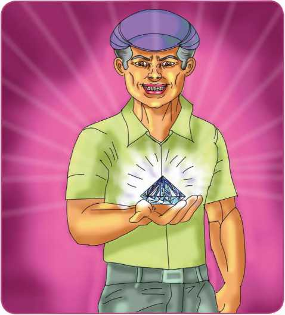
When I thanked him he grinned all over his lean face, and said:
“You will have to pay for my funeral.”
I must say that I never looked forward to any expenditure with more pleasure than to what it would cost me to put him away in the earth. As I rose to go, he said:
“The rubies are valuable. They are in my safe at the trust company. Before you unlock the box, be very careful to read a letter which lies on top of it; and be sure not to shake the box.” I thought this odd. “Don't come back. It won't hasten things.”
He died that day next week, and was handsomely buried. The day after, his will was found, leaving me his heir. I opened his safe and found in it nothing but an iron box, evidently of his own making, for he was a skilled workman and very ingenious. The box was heavy and strong, about ten inches long, eight inches wide and ten inches high.
On it lay a letter to me. It ran thus:
The image of a letter from Uncle Philip to Tom is given. The letter has all the details of the treasure box its contents and instructions to open it is also given.
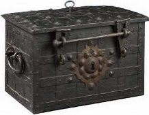
“DEAR TOM: This box contains a large number of very fine pigeon-blood rubies and a fair lot of diamonds; one is blue-a beauty. There are hundreds of pearls-one the famous green pearl and a necklace of blue pearls, for which any woman would sell her soul-or her affections.” I thought of Susan. “I wish you to continue to have expectations and continuously to remember your dear uncle. I would have left these stones to some charity, but I hate the poor as much as I hate your mothers son,-yes, rather more. “The box contains an interesting mechanism, which will act with certainty as you unlock it, and explode ten ounces of my improved, supersensitive dynamiteno, to be accurate, there are only nine and a half ounces. Doubt me, and open it, and you will be blown to atoms. Believe me, and you will continue to nourish expectations which will never be fulfilled. As a considerate man, I counsel extreme care in handling the box. Don't forget your affectionate
UNCLE”
I stood appalled, the key in my hand. Was it true? Was it a lie? I had spent all my savings on the funeral, and was poorer than ever.
Remembering the old man's oddity, his malice, his cleverness in mechanic arts, and the patent explosive which had helped to make him rich, I began to feel how very likely it was that he had told the truth in this cruel letter.
I carried the iron box away to my lodgings, set it down with care in a closet, laid the key on it, and locked the closet.
Then I sat down, as yet hopeful, and began to exert my ingenuity upon ways of opening the box without being killed. There must be a way.
After a week of vain thinking I bethought me, one day, that it would be easy to explode the box by unlocking it at a safe distance, and I arranged a plan with wires, which seemed as if it would answer. But when I reflected on what would happen when the dynamite scattered the rubies, I knew that I should be none the richer. For hours at a time I sat looking at that box and handling the key.
At last I hung the key on my watchguard; but then it occurred to me that it might be lost or stolen. Dreading this, I hid it, fearful that someone might use it to open the box. This state of doubt and fear lasted for weeks, until I became nervous and began to dread that some accident might happen to that box. A burglar might come and boldly carry it away and force it open and find it was a wicked fraud of my uncle's. Even the rumble and vibration caused by the heavy vans in the street became at last a terror.
Worst of all, my salary was reduced, and I saw that marriage was out of the question.
In my despair I consulted Professor Clinch about my dilemma, and as to some safe way of getting at the rubies. He said that, if my uncle had not lied, there was none that would not ruin the stones, especially the pearls, but that it was a silly tale and altogether incredible. I offered him the biggest ruby if he wished to test his opinion. He did not desire to do so. Dr. Schaff, my uncle's doctor, believed the old man's letter, and added a caution, which was entirely useless, for by this time I was afraid to be in the room with that terrible box.
At last the doctor kindly warned me that I was in danger of losing my mind with too much thought about my rubies. In fact, I did nothing else but contrive wild plans to get at them safely. I spent all my spare hours at one of the great libraries reading about dynamite.
Indeed, I talked of it until the library attendants, believing me a lunatic or a dynamite fiend, declined to humor me, and spoke to the police. I suspect that for a while I was “shadowed” as a suspicious, and possibly criminal, character. I gave up the libraries, and, becoming more and more fearful, set my precious box on a down pillow, for fear of its being shaken; for at this time even the absurd possibility of its being disturbed by an earthquake troubled me. I tried to calculate the amount of shake needed to explode my box.
The old doctor, when I saw him again, begged me to give up all thought of the matter, and, as I felt how completely I was the slave of one despotic idea, I tried to take the good advice thus given me.
Unhappily, I found, soon after, between the leaves of my uncle's Bible, a numbered list of the stones with their cost and much beside. It was dated two years before my uncle's death. Many of the stones were well known, and their enormous value amazed me.
Several of the rubies were described with care, and curious histories of them were given in detail. One was said to be the famous “Sunset ruby,” which had belonged to the Empress-Queen Maria Theresa. One was called the “Blood ruby,” not, as was explained, because of the color, but on account of the murders it had occasioned. Now, as I read, it seemed again to threaten death.
The pearls were described with care as an unequalled collection. Concerning two of them my uncle had written what I might call biographies-for, indeed, they seemed to have done much evil and some good. One, a black pearl, was mentioned in an old bill of sale as-She-which seemed queer to me.
It was maddening. Here, guarded by a vision of sudden death, was wealth “beyond the dreams of avarice.” I am not a clever or ingenious man; I know little beyond how to keep a ledger, and so I was, and am, no doubt, absurd about many of my notions as to how to solve this riddle.
At one time I thought of finding a man who would take the risk of unlocking the box, but what right had I to subject anyone else to the trial I dared not face? I could easily drop the box from a height somewhere, and if it did not explode could then safely unlock it; but if it did blow up when it fell, good-by to my rubies. Mine, indeed! I was rich, and I was not. I grew thin and morbid, and so miserable that, I at last carried my troubles to my father confessor. He thought it simply a cruel jest of my uncles, but was not so eager for another world as to be willing to open my box.
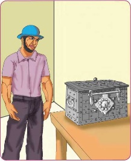
He, too, counselled me to cease thinking about it. Good heavens! I dreamed about it. Not to think about it was impossible. Neither my own thought nor science nor religion had been able to assist me.
Two years have gone by, and I am one of the richest men in the city, and have no more money than will keep me alive. Susan said I was half cracked like Uncle Philip, andbroke off her engagement. In my despair I advertised in the Journal of Science, and have had absurd schemes sent me by the dozen. At last, as I talked too much about it, the thing became so well known that when I put the horror in a safe, in a bank, I was promptly desired to withdraw it. I was in constant fear of burglars, and my landlady gave me notice to leave, because no one would stay in the house with that box. I am now advised to print my story and await advice from the ingenuity of the American mind. I have moved into the suburbs and hidden the box and changed my name and my occupation. This I did to escape the curiosity of the reporters. I ought to say that when the government officials came to hear of my inheritance, they were reasonably desired to collect the succession tax on my uncle's estate.
I was delighted to assist them. I told the collector my story, and showed him Uncle Philips letter. Then I offered him the key, and asked for time to get half a mile away. That man said he would think it over and come back later.
This is all I have to say. I have made a will and left my rubies and pearls to the Society for the Preservation of Human Vivisection. If any man thinks this account a joke or an invention, let him coldly imagine the situation:
SOCIETY FOR THE PRESERVATION OF HUMAN VIVISECTION
Given an iron box, known to contain wealth, and to contain dynamite, arranged to explode when the key is used to unlock it - what would any sane man do? What would he advise?
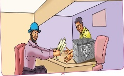
About the author:
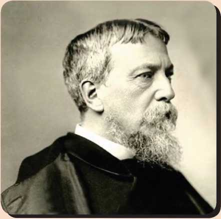
Silas Weir Mitchell (1829-1914) was a neurologist by profession. He was among the famous physicians of his time and a prolific writer of both scientific and literary works. He was born in Philadelphia, studied at the University of Pennsylvania and received the degree of M.D. in 1850. He is considered the father of neurology as well as a pioneer in scientific medicine. He published more than 25 literary titles and his medical experiences and background enabled him to write historical fiction with much psychological insight. Many honorary degrees were conferred upon him by several Universities at home and abroad. The American Academy of Neurology award for young researchers is named after him.
ingenious (adj.) - clever, original and inventive
mania (n) - an extensive, persistent
desire, an obsession
malicious (adj.) - spiteful, intended to harm or upset someone
queer (adj.) - strange, odd
appalled (adj.) - horrified, shocked
oddity (n) - the quality being strange or peculiar
closet (n) - cupboard
incredible (adj.) - impossible to believe
contrive (v) - cook up, hatch a plan by deliberate use of skills
despotic (adj.) - tyrannical, autocratic
avarice (n) - extreme greed for wealth
jest(n) - a joke
vivisection (n) - a surgery conducted on a living organism for experimental purposes.
A)Read the given lines carefully and identify the character / speaker:
1. I suppose you think me queer. I will explain.
2. Don't come back. It won't hasten things.
3. He thought it simply a cruel jest.
4. He did not desire to do so.
5. He would think it over and come back later.
B. Based on your understanding of the story, answer the following briefly.
1. What did the uncle do as soon as he bought a stone?
2. What did the uncle bequeath to the narrator?
3. What was the condition laid by the uncle to inherit his property?
4. Why do you think Tom happily looked forward to the expenditure for his uncles funeral?
5. Write a few words about the mechanism used in the iron box.
6. What was the counsel offered to the narrator?
7. Why and when was the narrator shocked?
8. What was the doctors warning to Tom?
9. Why didn't Tom dare to assign the task of unlocking the box to someone?
C. Answer the questions given below in a paragraph of 150 words.
1. Describe briefly the contents of the letter written by Tom's uncle.
2. Explain the efforts taken by Tom to open the iron box? Did he succeed? Why?
D. Fill in the blanks with the right option and write down the summary of the story 'A dilemma'.
1. The narrator was sent for, by his uncle when he was .
(on his deathbed / on his travels / in his workplace)
2. The uncle had collected precious (dash). (jewels / stones / articles)
3. His uncle announced Tom as his heir and wanted him to pay for his (dash). (rented house / marriage / funeral)
4. Leaving an iron box for Tom, his uncle instructed him not to (dash) the box. (throw / carry / shake)
5. The letter read that the box contained (dash). (a sensitive dynamite / jewels / money)
6. He started thinking of all possible ways to open the box without being (dash). (wounded / killed / maimed)
7. He planned to explode the box at (dash) but dropped the plan in fear of losing the rubies. (home / a safe distance / a waste land)
8. His consultation with (dash) did not yield him any fruitful solution. (Uncle Philip / Professor Clinch / Susan)
9. He failed in his attempts to open the box. His efforts to read about explosives led to (hopes / confusions / suspicions) and he had to change his (dash). (name and occupation / lodgings / appearance)
10. At last, he bequeathed the box to (dash). (his offspring / his friends / the Society)
❖ To learn the sentence types
❖ To identify Simple,Complex
and compound sentences
This ICT corner focuses on how to identify simple, compound and complex sentences. Various steps are given for easy understanding with images. A QR code is also given.
Steps
1. Type the URL link given below in the browser or scan the QR code.
2. Display the questions on screen.Select Classic or team mode
3. Type game pin in your mobile to start quiz
4. Click on the Correct colour symbol options in your mobile for the displayed questions.
5. Check your scores at the end of the game and announce the top three winners
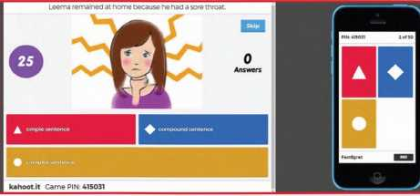
Download Link
Click the following link or scan the QR code to access the website.
https://create.kahoot.it/share/simple-complex-and-compoundsentences/10e6f440-33al-46ba-aca3-cec7233ec54a
** Images are indicatives only.
A Trip to Remember Forever
Our trip to this wonderful city, Darjeeling started with a breathtaking view. We parted the curtains of our hotel room and there it was, Kanchenjunga, the third highest mountain in the world! The entire range was in front of us in full view, snow-capped and dazzling in the sun. Our trip started early in the morning the next day. We woke up at 4 a.m. and reached Tiger hill at 5 a.m. to view the sunrise as the place has earned international fame for the best sunrise view. Tiger hill is situated at an altitude of 2590 meters and is 13 kilometers away from the city. Although Kanchenjunga was visible from the window of our hotel room, viewing it from tiger hill was a different experience altogether. It was not a very cloudy day so we were lucky enough to get a glimpse of the Mount Everest. After Tiger hill, we visited Senchal Lake which is another picnic spot nearby. We were told that the lake supplies drinking water to the city.
The next spot on our list was Batasia Loop, a spiral railway near Ghum. The loop is situated 5 kilometer from the city and is a gigantic railway loop where the toy train runs and takes a 360 degree turn. It is a beautiful place with manicured garden, streams and waterfalls. While travelling on the toy train, one gets a breath-taking view of Darjeeling's scenic beauty. We would suggest the toy train only for people with lot of patience as the train travels at a speed of 15 kilometers per hour and covers 14 kilometers in three hours which might be an utter disappointment for some. Altogether we had a memorable and enjoyable school trip with our friends and it will linger in our thoughts forever.
A Short Story:
Three Simple Rules
This Short Story Three Simple Rules is quite interesting to all the people. Enjoy reading this story.
Once there was a rich man in Thailand. His name was Chulong. He was a very rich man. Yet he wanted more riches, more money.
One day he was walking in his garden. He saw a strange bird in a bush. It was very small. But it had very beautiful and colorful features. Its voice was also very sweet. Chulong had never seen such a bird in his life. He slowly went near the bush unseen. He caught the bird. Now the bird began to speak.
“Why have you caught me?” the bird asked.“I want to make money. I can sell you for a big amount,” replied Chulong
“But you are already rich. Why do you want more?” asked the bird.
“Because I want to become richer and richer,” replied Chulong.
“But do not dream of making money through me!” said the bird. It further added, “You can not sell me. Nobody will buy me, because, in imprisonment, I lose my beauty and my sweet voice.” Then it slowly turned into a black bird.
The beautiful features were now looking like the feathers of a crow.
Chulong hopes of making money were shattered. He said angrily, “I will kill you, and I will eat your meat.”
“Eat me! I am so small. You will not get any meat out of me,” replied the bird.
Chulong could not answer. The bird then suggested, “Well set me free. In return
I shall teach you three simple but useful rules.”
“What is the use of the rules? I want only money,” said Chulong. He was irritated.
“But these rules can profit you greatly,” added the bird.
“Profit me! Really? Then I shall set you free. But how can I trust you? You may fly away,” said Chulong.
“I give you my word. And I always keep my word,” said the bird.
Chulong wanted to take a chance. He released the bird. It flew up at once. Then it sat on the branch of a tree. Its color started changing. It became beautiful again.
Chulong asked, “Now teach me the rules.”
“Certainly,” said the bird.
Then it added, “The first rule is Never Believe everything others say. The second rule is Never be sad about something you do not have. The third rule is Never throw away what you have in your hand.”
“You silly bird,” shouted Chulong. And he added, “These three rules are known to every one. You have cheated me.”
But the bird said, “Chulong, just sit down for a while. Think about all your actions of today. You had me in your hands, but you threw me away (released me). You believed all that I said. And you are sad about not having me. The rules are simple. But you never followed them. Now do you see the value of the rules?” so saying the bird flew away and disappeared from his sight.
Acknowledgement - thanks to
Mr. E. Mageesh,
Director, ISEA, CDAC.
Preethi Srinivasan is a former cricketer from Tamil Nadu who played domestic cricket in the 1990's. At the age of eight, she was the youngest girl to play in the State cricket team. At the age of 17, she captained the Tamil Nadu women's under-19 cricket team in a national tournament in 1997, and registered its only victory ever. She was also a state-level gold winner in 50 m breaststroke swimming event. But the following year, she suffered a spinal cord injury in an accident in Puducherry that left her quadriplegic. Her own trauma inspired her to create Soul Free, a foundation that aims to help Indian youth to cope with disabilities related to spinal cord injuries, and how suitable precautions can help them out. Instead of the term 'differently abled', Soul Free employs the term 'positively-abled' for those suffering from a disability. She is active in social life and earned many honours too. In 2018, she received the Kalpana Chawala Award for Courage and Daring Enterprise.
Step 1
♦ Login to your irctc account on irctc.co.in
Step 2
♦ Now fill in the information asked in Book Your Ticket section. Choose from and fill in the starting point of your journey. Fill in the destination in To. Choose date and class.
Step 3
♦ Click find trains... List of available trains will appear. Choose the train and then click on check availability and fare for the train of your choice.
Step 4:
♦ Click on Book now.
Step 5:
♦ Now fill your personal details like name, date of birth, berth preference, mobile number, any valid ID proof number and email( ticket will be sent to this number and email). After filling information and captcha click on continue booking.
Step 6:
♦ This is the final step where you have to make payment for your ticket. There are various methods through which irctc accepts payment. You can make the payment by credit / debit card or e-wallets.
Hello! I'm Santhiya. I want to write about my mobile phone. I got it from my parents for my birthday two years back. I like it very much and I think it's sometimes good to have it in my bag.
I always keep it in my bag or in my pocket so my parents and my friends can always call me. It's got a calculator in it so I use it frequently to calculate. It's also a kind of information file. I can use my mobile phone to connect to the Internet and look through the news or read emails. Isn't it fantastic?
Last year I was cycling with my friend on a holiday with my friend. We went cycling but the weather wasn't good. It was cold and windy. It started to rain and it got dark. Suddenly my friend fell off her bike and broke her leg. At first I didn't know what to do but then I thought about my phone. It was in my backpack so I telephoned for help. After fifteen minutes a doctor arrived.
Sometimes people are not keen on mobile phones. They are a real problem because they always ring at the wrong moment. I'm not crazy about my mobile phone but I feel safe when I have it with me.
Unit – 6
It must have been eight years ago I was at Thiruvarur to attend the Nel Thiruvizha (seed festival) organised by Jayaraman.
I went there to volunteer; I'd heard about him from organic farming poneer G. Nammalvar and wanted to see if we could bring the varieties Jayaraman revived, to the market.
It was just a small affair then; some people attended. But the festival grew exponentially from then on; from 500, the number of participants went up to 1,500 next year; and then to 2,500, 5,000... there was no looking back. When I entered the village Adhirangam where the festival took place, I saw men carrying sacks of paddy, they came with five kilograms and returned with 10 kilograms the next year. That was how the seed exchange work.
I remember how Jayaraman cycled across villages to find traditional paddy seeds and distribute them. I asked him how he planned to carry his vision forward; what would he do for funds/ But he replied, “What do I need funds for ? I have seeds and my cycle will take me to everywhere. Or I'll take a bus”.
If people called him asking for his number of varieties of seeds, he went directly to see to it that they got what they wanted. I participated in the planning of his seed festivals.
But the man didn't believe I going by a strict plan. He was always cool when those around him panicked. For instance, if I told him there were many people coming for the event and that we had to paln for meals and plates, he would respond unfettered, “Thambi, it'll fall in place. If there is no plates we can buy banana leaves; if there's no food. We can cook and serve rice, we have it in plenty, don't we?”
What if the sound system doesn't work, I insisted and he said.”Then we might have to speak louder”. I joked that I would refuse to come for planning meetings, because anyway, he didn't need them. On a serious note, all the festivals he organised went on smoothly , like he believed.
During floods or droughts , he took the collector of Nagapattinam to show him how our traditional paddy withstood the forces of Nature. He visited collectorates to submit petitions against genetically modified crops whenever he encountered them. Later in life, when his popularity grew, he spent more time in the field; but that's where his heart was. Hundreds of people called me from India and abroad, enquiring about his health during his final days. He showed that if you worked selflessly for the society, it will give back.
Unit – 7
“Something is very wrong,” says the detective.
“I know!” says Ms. Gervis. “It is wrong that someone has stolen from me!” The detective looks around Ms. Gervis' apartment. “That is not what I am talking about, ma'am. What is wrong is that I do not understand how the robber got in and out.”
Ms. Gervis and the detective stand in silence. Ms. Gervis' eyes are full of tears. Her hands are shaking.
“The robber did not come through the window,” says the detective. “These windows have not been opened or shut in months.”
The detective looks at the fireplace. “The robber did not squeeze down here.”
The detective walks to the front door. He examines the latch. “And since there are no marks or scratches, the robber definitely did not try to break the lock.”
“I have no idea how he did it,” says a bothered Ms. Gervis. “It is a big mystery.”
“And you say the robber stole nothing else?” asks the detective. “No money, no jewelry, no crystal?”
“That's right, detective. He took only what was important to me,” Ms. Gervis says with a sigh. “There is only one thing I can do now.”
“And what is that?” the detective asks with surprise.
“I will stop baking cakes,” Ms. Gervis says. “They are mine to give away. They are not for someone to steal.”
“You can't do that!” says the detective with alarm. “Who will bake those delicious cakes?” “I am sorry. I do not know,” says Ms. Gervis.
“I must solve this case immediately!” says the detective.
We express our gratitude to the writers and publishers whose contributions have been included in this book. Copyright permission for use of these materials have been applied for, however information on copyright permission for some of the material could not be found. We would be grateful for information for the same.
Prose
His First Flight - Liam O Flaherty
The Night the Ghost Got in - James Grover Thurber
Empowered Women Navigating The World
The Attic - Satyajit Ray
Tech Bloomers
The Last Lesson - Alphonse Daudet
The Dying Detective - Arthur Conan Doyle
Poem
Life - Henry Van Dyke
The Grumble Family - L.M. Montgomery
I am Every Woman - Rakhi Nariani Shirke
The Ant and the Cricket - Aesops Fables
The Secret of the Machines - Rudyard Kipling
No Men Are Foreign - James Falconer Kirkup
The House on Elm Street - Nadia Bush
Supplementary
The Tempest - William Shakespeare
Zigzag - Asha Nehemiah
The Story of Mulan
The Aged Mother - Matsuo Basho
A day in 2889 of an American Journalist - Jules Verne
The Little Hero of Holland - Adapted from Etta Austin Blaisdell and Mary Frances Blaisdel
A Dilemma - Silas Weir Mitchell
LISTENING
Studentswill be able to
❖ Listen to passages, poems, stories, dialogues and commentaries and answer short questions, complete tabular columns and fill in the blanks based on their comprehension.
❖ Listen and note down exact details for further reference.
❖ Listen critically to understand content and distinguish main points from supporting details.
SPEAKING
❖ Speak effectively with the help of the guidelines given.
❖ Frame questions to elicit the desired response, and respond appropriately to questions.
❖ Take active part in discussions on familiar topics.
WRITING
❖ Plan and organize and present ideas coherently in different kinds of formats and genres.
❖ Organize thoughts and ideas to write for various purposes (formal, informal).
❖ Use a range of grammatical structures and vocabulary accurately and appropriately, to extend, link and develop ideas with sensitivity to meaning and intent.
LITERATURE
❖ Read literary (both contemporary and classic) books in English and understand, interpret, evaluate and respond to the characters, plot and setting.
❖ Discuss authors' intent/ purpose or ideas.
❖ Discuss texts using own knowledge and experience.
GRAMMAR
❖ Use verb forms, phrases, sentence types and structure words accurately.
❖ Use a range of grammatical structures fairly accurately and appropriately to support the four skills.
❖ Correct and edit short passages for accuracy.
VOCABULARY
❖ Learn the meaning of new words and use them when speaking and writing.
❖ Use context clues to determine the meanings of unfamiliar words.
❖ Use print and electronic vocabulary tools such as dictionaries.
EXTENDED READING
Leads short stories and other longer, standard literary pieces.
Read for pleasure and general understanding.
Review and comment on the events, characters plot and language in the book or stories.
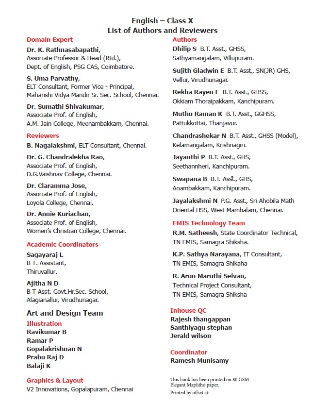